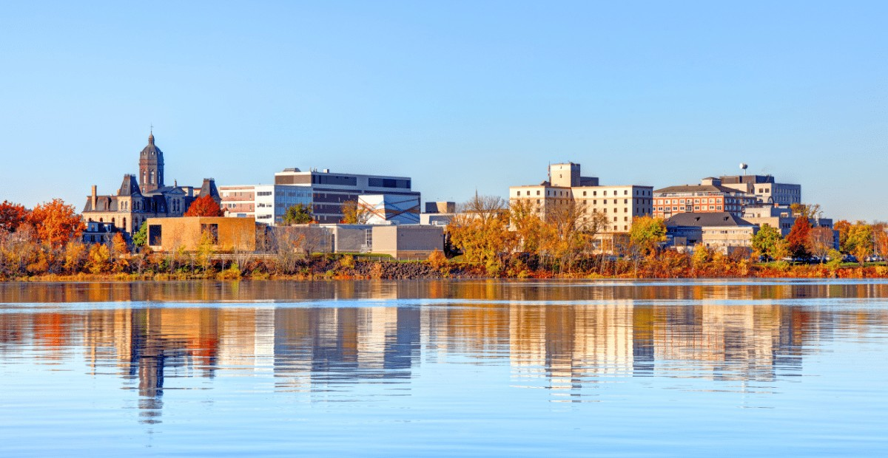

My First Blog Post
"My name is Kinga Gyeltshen, and I came to Fredericton, New Brunswick, to pursue a Master’s in Electrical Engineering at UNB..."
Read MoreMy Journey to Fredericton: Education, Career, and Family Life
From Bhutan to Atlantic Canada
My journey brought me from Bhutan to Fredericton, New Brunswick, where I came to pursue a Master's program at the University of New Brunswick. As a research-based student in Electrical Engineering, I found both academic challenges and incredible opportunities in this welcoming Canadian city.
Academic Achievement and Career Transition
After successfully completing my program, I joined the workforce in the last quarter of 2022. Fredericton has proven to be an excellent place for professional growth in the engineering field, with its growing tech sector and research opportunities.
Family Life in Atlantic Canada
What makes Fredericton truly special is what it has offered to my family:
- A safe, welcoming community to raise children
- Beautiful natural surroundings perfect for family activities
- Four distinct seasons that each bring their own charm
"The Atlantic Canadian lifestyle has given us the perfect balance between career opportunities and quality family time."
Exploring Our Beautiful Region
Every summer, we make it a priority to explore our stunning region:
On land: Hiking in Odell Park, visiting Kings Landing, and enjoying the Harvest Jazz & Blues Festival.
By the ocean: Day trips to Saint Andrews by-the-Sea, Fundy National Park, and the breathtaking Hopewell Rocks.
Why We Chose to Stay
Fredericton offers the perfect combination of:
- Career opportunities in engineering and technology
- Excellent education system for our children
- Affordable quality of life
- Natural beauty right at our doorstep
As we continue our Canadian journey, we're grateful for the warm welcome we've received and look forward to many more years in this special part of the country.